Tema 3.B.9
Comercio internacional y crecimiento económico. Especial referencia a los efectos del comercio sobre el crecimiento.
Crecimiento empobrecedor de Bhagwati, Rybczynski y sesgos de Johnson; comercio y crecimiento endógeno (Romer, Grossman-Helpman), ISI frente a IOE y evidencia.
Exclusivo Material exclusivo de victorgutierrezmarcos.es y la app Oposición TCEE · DCE. Puedes usarlo libremente para tu estudio personal. No se autoriza su incorporación a otras plataformas, aplicaciones o servicios. Condiciones de uso.
Introducción
Enganche:
«¿Qué fue antes, el huevo o la gallina?». En 1960, Corea del Sur exportaba el 2,6 % de su PIB; en 2024, el 44,4 %. En el mismo tiempo, su PIB por habitante a precios constantes se ha multiplicado por unas 36, de 1.038 a 37.048 dólares de 2015.
¿Creció Corea porque se abrió al comercio, o comerció más porque creció? Las 2 cosas van juntas en casi todos los países que han salido de la pobreza, pero de qué lado empieza la cadena es una de las preguntas más discutidas de la economía.
Detrás está la pregunta de esta exposición: ¿cómo cambia el crecimiento lo que un país comercia, y cómo cambia el comercio lo deprisa que crece?
Relevancia:
Positiva: el grado de apertura de la economía mundial se ha más que duplicado en medio siglo. El comercio de bienes y servicios pasó del 26 % del PIB mundial en 1970 al 57 % en 2024, con un máximo del 62 % en 2022 y caídas bruscas en las recesiones de 2009 y 2020 (gráfico 1). Y sigue creciendo más que la producción: en 2025, el volumen del comercio mundial de mercancías aumentó un 4,2 %, 1,4 veces más que el PIB mundial (3,0 %).
Por qué importa: pequeñas diferencias en la tasa de crecimiento, mantenidas durante décadas, son grandes diferencias de renta por habitante y, al final, de calidad de vida.
Normativa: si el comercio afecta a la tasa de crecimiento, y no solo al nivel de la renta, la política comercial es también política de crecimiento. El debate ha vuelto con la subida de los aranceles desde 2025 y la fragmentación del comercio en bloques [ver tema 3.B.7].
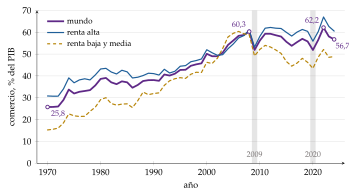
Fuente: elaboración propia con datos de Banco Mundial (2026a). Hay que ver 3 cosas: la apertura se duplica en 50 años; se acelera en los 90 y los 2000, con la entrada de China y las cadenas globales de valor, y se estanca desde 2008; y cae más que el PIB en las recesiones (2009 y 2020).
Contextualización:
Desde un punto de vista histórico:
Los clásicos ya unían las 2 cosas: para Smith (1776), el comercio amplía el mercado y, con él, la división del trabajo, y da salida al excedente; para Ricardo (1817), importar alimentos baratos retrasa el estado estacionario.1
La teoría del comercio se hizo estática: la tradicional (Ricardo, Heckscher-Ohlin) [ver tema 3.B.5] y la nueva (Krugman, Melitz) [ver tema 3.B.6] explican el patrón de comercio con tecnologías y dotaciones dadas. Miden ganancias estáticas: una reasignación de una vez que sube el nivel de la renta.
La teoría del crecimiento era cerrada: Solow (1956) explica el crecimiento a largo plazo por un progreso técnico que no explica [ver tema 3.A.43]; el crecimiento endógeno, desde Romer (1986), Lucas (1988) y Romer (1990), lo explica dentro del modelo [ver tema 3.A.44].
Los 2 puentes:
en los años 50, la teoría pura del comercio incorpora el crecimiento como un dato, un cambio de las dotaciones o de la tecnología;
desde finales de los 80, el crecimiento endógeno permite que el comercio cambie la tasa de crecimiento, las ganancias dinámicas.
En paralelo, la economía del desarrollo discutía si el comercio era motor u obstáculo del crecimiento de los países pobres: la tesis de Prebisch (1949) y Singer (1950) frente a la experiencia de Asia oriental [ver tema 3.B.28].
Definiciones: el crecimiento económico es el aumento sostenido de la renta por habitante; el grado de apertura, el peso del comercio en la economía, las exportaciones más las importaciones sobre el PIB.
Problemática:
¿Cómo afecta el crecimiento económico, según su sesgo y su origen, al volumen de comercio, a la relación real de intercambio (RRI) y al bienestar? ¿Puede un país empobrecerse por crecer?
¿Puede el comercio cambiar no solo el nivel de la renta, sino su tasa de crecimiento a largo plazo? ¿Por qué canales?
¿Qué estrategia comercial ha favorecido más el crecimiento de los países en desarrollo, y qué dicen los datos, si es tan difícil separar la causa del efecto?
Estructura:
La exposición sigue las 2 direcciones de la relación.
En el bloque I, el crecimiento como dato: cómo cambian el comercio, la RRI y el bienestar según el tamaño del país y el origen del crecimiento.
En el bloque II, la especial referencia del título: cómo el comercio cambia el crecimiento, desde la teoría del crecimiento, la del desarrollo y la geografía económica, y qué dice la evidencia.
Este orden es también el de la historia del análisis y el de la lógica: el bloque I toma el crecimiento como exógeno, y su limitación, que no explica de dónde sale, abre el bloque II.
3.B.9. Comercio internacional y crecimiento económico. Especial referencia a los efectos del comercio sobre el crecimiento
Introducción2′30″
I. Efectos del crecimiento económico en el comercio internacional11′
1. Contexto histórico
2. Efectos sobre el comercio: país pequeño, país grande (crecimiento empobrecedor), acumulación de factores y progreso técnico
3. Valoración
II. Efectos del comercio internacional en el crecimiento económico15′30″
1. Desde la teoría del crecimiento: crecimiento exógeno, externalidades, Romer y Rivera-Batiz-Romer, Grossman-Helpman, otros canales y difusión
2. Desde la teoría del desarrollo: sustitución de importaciones frente a orientación a la exportación
3. Desde la geografía económica
4. Evidencia empírica
Conclusión1′
Reparto del cante: introducción, 2′30″; I, 11′ (I.1, 1′; I.2, 9′: país pequeño, 3′, país grande, 3′30″, acumulación de factores, 1′15″, y progreso técnico, 1′15″; I.3, 1′); II, 15′30″ (apertura, 0′45″; II.1, 8′; II.2, 2′45″; II.3, 1′30″; II.4, 2′30″), y conclusión, 1′. La especial referencia del título es el bloque II: lleva más de la mitad del cuerpo. En el bloque I, la (1) y la tabla de los 5 sesgos (tabla 1) guían todo el bloque, con sus gráficos (presupuesto con las 5 regiones, curvas de oferta neta, crecimiento empobrecedor y Rybczynski); en el apartado II.1, la lista de los 4 mecanismos de Grossman y Helpman (2015) y la tasa de crecimiento de Romer (7). Los gráficos imprescindibles son el 2, el 4, el 5 (panel del crecimiento empobrecedor) y el 6. Los refranes van junto a su concepto: el del enganche, «¿qué fue antes, el huevo o la gallina?», y los dichos «ir por lana y volver trasquilado» (crecimiento empobrecedor), «morir de éxito» (enfermedad holandesa), «todo se pega menos la hermosura» (externalidades), «no hay que reinventar la rueda» (efecto redundancia), «todo depende del cristal con que se mira» (coste de la I+D), «de fuera vendrá quien de casa nos echará» (efecto competencia) y «quien no se arriesga no pasa la mar» (orientación a la exportación). Las notas al pie, las cajas grises y los anexos son para las preguntas del tribunal.
Notación. En el bloque I, con la misma notación que la teoría tradicional [ver tema 3.B.5], \(A\) y \(B\) son los 2 países y \(X\) e \(Y\) los 2 bienes (y sus cantidades): \(A\) es abundante en capital, \(X\) es intensivo en capital y \(A\) lo exporta e importa \(Y\). \(X^A_P\) y \(X^A_C\) (e \(Y^A_P\), \(Y^A_C\)) son la producción y el consumo de \(A\); sus exportaciones son \(E^A=X^A_P-X^A_C\) y sus importaciones, \(M^A=Y^A_C-Y^A_P\) (sin el superíndice cuando no hay duda). \(p_X\) y \(p_Y\) son los precios y \(\mathrm{RRI}\equiv p_X/p_Y\). \(\overline W\) es la renta nacional medida en unidades de \(Y\), el valor de la producción a la RRI dada; \(\varepsilon_{Y_C,\overline W}\) es la elasticidad de \(Y_C\) respecto a ella, con su signo, y \(\mathrm{PMgC}_Y\equiv\partial Y_C/\partial\overline W\) la propensión marginal a consumir \(Y\) (la media, \(Y_C/\overline W\), va sin sigla). \(L\) y \(K\) son el trabajo y el capital, con dotaciones \(\overline L\) y \(\overline K\); \(w\) es el salario y \(r\) la renta del capital. FPP es la frontera de posibilidades de producción, CIS una curva de indiferencia social y ON\(_A\) la curva de oferta neta de \(A\). En el álgebra de Jones, \(\hat x\equiv \mathrm{d}x/x\), \(s_{ij}\) es la participación del factor \(i\) en el coste de \(j\) y \(\ell_{ij}\) la fracción del factor \(i\) empleada en \(j\). En el bloque II, como en macroeconomía, \(Y\) es la producción agregada y \(X\) y \(M\) las exportaciones y las importaciones; el grado de apertura se escribe \((X+M)/Y\), sin símbolo propio. \(k\equiv K/L\) es el capital por trabajador y \(\gamma_x\equiv\dot x/x\) la tasa de crecimiento de \(x\); en las externalidades, \(E\) es el conocimiento que cada empresa toma de la economía y \(\eta\) su intensidad; en Romer, \(N_t\) es el número de variedades de bienes intermedios (las ideas), \(L_I\) los investigadores, \(\eta_I\) la productividad de la investigación y \(\gamma^{\mathrm E}\) la tasa de crecimiento de equilibrio. \(r\) es el tipo de interés real, \(\rho\) la tasa de descuento y \(\theta\) la inversa de la elasticidad de sustitución intertemporal, con la misma notación que el crecimiento endógeno [ver tema 3.A.44]. En Grossman y Helpman, \(H\) es el capital humano (trabajo cualificado) y \(L\) el trabajo no cualificado, con remuneraciones \(w_H\) y \(w_L\), y \(p_{\mathrm A}\) y \(p_{\mathrm T}\) son los precios del bien de alta tecnología y del tradicional (locales). En la difusión, \(N_1\) y \(N_2\) son las variedades del líder y del seguidor y \(\nu(N_2/N_1)\) el coste de imitar. En la ley de Thirlwall, \(Y^*\) es la renta del resto del mundo y \(\varepsilon_{X,Y^*}\) y \(\varepsilon_{M,Y}\) las elasticidades renta de las exportaciones y de las importaciones. En la geografía económica, con la misma notación que la nueva teoría del comercio [ver tema 3.B.6], \(\mu\) es el peso de las manufacturas en el gasto, \(\lambda_i\) la cuota de la región \(i\) en los trabajadores industriales, \(\tau\) el coste de transporte iceberg, \(\phi_\tau\equiv\tau^{1-\sigma}\) la libertad comercial y \(\omega_i\) el salario real, y \(\phi^{\mathrm r}_\tau\) y \(\phi^{\mathrm s}_\tau\) los puntos de ruptura y de sostenibilidad. Los 2 usos de \(X\), \(Y\) y \(E\) no conviven en un mismo apartado.
I. Efectos del crecimiento económico en el comercio internacional
En el cante (11′): el contexto histórico, de palabra (1′). El marco y la (1), que guía todo el bloque. País pequeño (3′): el gráfico 2 con las 5 regiones y, al lado, la tabla 1 en versión mínima (5 filas y las 2 columnas); el gráfico 3 solo si da tiempo (basta decir que la nomenclatura se invierte); el efecto total y el bienestar, de palabra. País grande (3′30″): las curvas de oferta neta con el desplazamiento de ON\(_A\) (gráfico 4, 1′); los 2 efectos sobre el bienestar, la (4) y el panel derecho del gráfico 5, con el dicho «ir por lana y volver trasquilado» (2′); las condiciones, Johnson (1967) y el arancel óptimo, de palabra (0′30″). Acumulación de factores (1′15″): la FPP de Rybczynski pequeña (gráfico 6, panel izquierdo) con la (5) debajo y la enfermedad holandesa con el dicho «morir de éxito». Progreso técnico (1′15″): de palabra; los tipos de progreso (gráfico 7) son de apoyo, y de la tabla 2 se dice la columna del progreso neutral. Valoración y puente (1′). El álgebra del progreso técnico sesgado y su caja de Edgeworth (anexo A) y la derivación del bienestar del país grande no se cantan.
Conclusión anticipada: el efecto del crecimiento sobre el comercio no tiene signo a priori: depende de su sesgo (hacia el bien exportable o el importable, en la producción y en el consumo) y de su origen (qué factor crece o en qué sector hay progreso técnico). En un país pequeño, crecer siempre mejora el bienestar; en uno grande, el crecimiento sesgado hacia lo que exporta empeora su RRI y puede llegar a empobrecerlo.
Nexo: empezamos por la primera dirección de la relación, la que se estudió antes: el crecimiento se toma como un dato y se pregunta qué le hace al comercio.
I.1. Contexto histórico
La teoría moderna del crecimiento despega con Solow (1956), tras Harrod (1939) y Domar (1946) [ver tema 3.A.43]. Para estudiar el comercio, el modelo de Solow tiene 2 límites:
es una economía cerrada: no analiza los efectos de la apertura;
con rendimientos decrecientes del capital, la economía llega a un estado estacionario en el que la inversión solo repone la depreciación y equipa a los nuevos trabajadores, \(s\,f(k^*)=(n+\delta)\,k^*\), y el producto por trabajador solo crece con un progreso técnico exógeno.
En ese marco, el comercio no puede cambiar el crecimiento a largo plazo: no hay sitio para los efectos del comercio sobre el crecimiento sostenido.
Por eso los primeros análisis van en la otra dirección. Hasta los años 50, la teoría pura del comercio era estática: dotaciones de factores y tecnologías dadas. Desde entonces toma el crecimiento como un dato (más factores o mejor tecnología) y estudia, con estática comparativa en el modelo de Heckscher-Ohlin, cómo cambia el comercio.
Estas cuestiones las estudian Johnson (1955, 1958), que clasifica los sesgos del crecimiento, Rybczynski (1955), con la acumulación de factores, Bhagwati (1958), con el crecimiento empobrecedor, y Findlay y Grubert (1959), con el progreso técnico.
I.2. Efectos del crecimiento económico sobre el comercio internacional
Marco: el modelo de Heckscher-Ohlin de 2 países, 2 bienes y 2 factores [ver tema 3.B.5]. El país \(A\) es abundante en capital y \(X\) es intensivo en capital, así que \(A\) exporta \(X\) e importa \(Y\). Hay especialización incompleta y un consumidor representativo con preferencias regulares (continuas, monótonas y convexas), de modo que el bienestar se lee en sus curvas de indiferencia social.
Qué es crecer: un desplazamiento hacia fuera de la FPP, por más factores o por progreso técnico. Lo medimos por su efecto, a precios constantes, sobre las importaciones del país, la diferencia entre lo que consume y lo que produce del bien importable:
\[M^A=Y^A_C-Y^A_P\tag{1}\]
Como el comercio está equilibrado (\(\mathrm{RRI}\cdot E^A=M^A\)), lo que pase con las importaciones pasa también con las exportaciones.
El orden: primero el país pequeño, que toma la RRI como dada (I.2.1); después el grande, cuyo crecimiento la cambia (I.2.2); y al final, el origen del crecimiento: la acumulación de factores (I.2.3) y el progreso técnico (I.2.4).
I.2.1. En un país pequeño
a) Idea
Si un país crece, ¿comercia más o menos en proporción a su renta? ¿Se vuelve más dependiente del exterior o más autosuficiente? Johnson (1955) clasifica el crecimiento según su efecto sobre las importaciones a precios constantes, separando el lado del consumo y el de la producción.
b) Modelo
i) Supuestos
Los del apartado I.2.
País pequeño: pesa tan poco en el comercio mundial que los cambios de sus exportaciones o importaciones no afectan a los precios internacionales; la RRI está dada.
Crecer es que aumente la renta nacional \(\overline W\), medida en unidades de \(Y\): el valor de la producción a la RRI dada, que es la ordenada en el origen de la recta de presupuesto del país.
ii) Desarrollo
El efecto sobre el consumo: ¿aumenta el consumo del importable más, menos o en la misma proporción que la renta? Depende de las preferencias, y lo mide la elasticidad renta de la demanda de \(Y\), el cociente entre su propensión marginal y su propensión media a consumir: \[\tag{2} \varepsilon_{Y_C,\overline W}=\frac{\partial Y_C/\partial\overline W}{Y_C/\overline W}=\frac{\mathrm{PMgC}_Y}{Y_C/\overline W}.\]
Gráficamente (gráfico 2), el crecimiento traslada hacia fuera la recta de presupuesto, paralela porque la RRI no cambia. Respecto al consumo inicial \(C_0\), el nuevo consumo cae en una de 5 regiones, separadas por la vertical y la horizontal que pasan por \(C_0\) y por el rayo desde el origen que mantiene sus proporciones.
Si \(Y_C\) crece en la misma proporción que la renta, el crecimiento es neutral (preferencias homotéticas); si crece más, procomercio; si crece menos, anticomercio. Los casos extremos son el ultraprocomercio, en que el consumo de \(Y\) crece más que la propia renta y el de \(X\) cae (\(X\) es inferior), y el ultraanticomercio, en que cae el consumo de \(Y\) (\(Y\) es inferior).
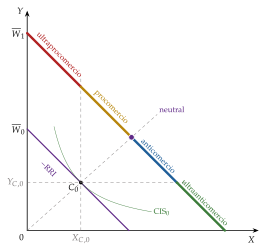
El efecto sobre la producción: ¿aumenta la producción del importable más, menos o en la misma proporción que la renta? Lo mide la elasticidad análoga, \(\varepsilon_{Y_P,\overline W}=(\partial Y_P/\partial\overline W)/(Y_P/\overline W)\), y se lee igual sobre la FPP desplazada (gráfico 3), pero con la nomenclatura al revés: producir más importable sustituye importaciones y hace al país más autosuficiente.
Si \(Y_P\) crece menos que la renta, el crecimiento es procomercio por el lado de la producción, y si cae en términos absolutos, ultraprocomercio.
Si \(Y_P\) crece más que la renta, es anticomercio, y si crece tanto que la producción de \(X\) cae, ultraanticomercio.
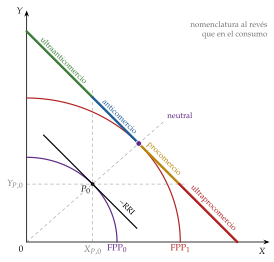
Los 5 tipos, en los 2 lados, se resumen en la tabla 1, con los colores de los gráficos.
| Tipo | Lado del consumo: demanda de \(Y\) |
Lado de la producción: oferta de \(Y\) |
|---|---|---|
| Ultraprocomercio | \(\mathrm{PMgC}_Y>1\): el consumo de \(X\) cae (\(X\) inferior) |
\(\varepsilon_{Y_P,\overline W}<0\): la producción de \(Y\) cae |
| Procomercio | \(\varepsilon_{Y_C,\overline W}>1\) y \(\mathrm{PMgC}_Y<1\) | \(0<\varepsilon_{Y_P,\overline W}<1\) |
| Neutral | \(\varepsilon_{Y_C,\overline W}=1\) (preferencias homotéticas) |
\(\varepsilon_{Y_P,\overline W}=1\) |
| Anticomercio | \(0<\varepsilon_{Y_C,\overline W}<1\) | \(\varepsilon_{Y_P,\overline W}>1\) y \(\partial Y_P/\partial\overline W<1\) |
| Ultraanticomercio | \(\varepsilon_{Y_C,\overline W}<0\): el consumo de \(Y\) cae (\(Y\) inferior) |
\(\partial Y_P/\partial\overline W>1\): la producción de \(X\) cae |
Fuente: elaboración propia a partir de Johnson (1955) y Gandolfo (2014a). En fondo salvia, el caso de referencia.
El efecto total: lo que interesa es qué pasa con las importaciones (1). Su elasticidad respecto a la renta pondera los 2 efectos: \[\tag{3} \varepsilon_{M^A,\overline W}=\frac{Y_C}{M^A}\,\varepsilon_{Y_C,\overline W}-\frac{Y_P}{M^A}\,\varepsilon_{Y_P,\overline W},\] y el crecimiento es, en conjunto, procomercio si \(\varepsilon_{M^A,\overline W}>1\) (las importaciones ganan peso en la renta y el país es menos autosuficiente), neutral si es 1 y anticomercio si es menor.
Si los 2 lados tienen el mismo sesgo, el resultado es inmediato: por ejemplo, procomercio en el consumo y en la producción da un crecimiento procomercio.
Si se oponen, decide el tamaño de las 2 elasticidades, ponderadas por el peso del consumo y de la producción de \(Y\) en las importaciones.
iii) Implicaciones
El volumen de comercio crece en todos los casos salvo el ultraanticomercio, el único en que las importaciones (y, con el comercio equilibrado, las exportaciones) caen en términos absolutos.
El bienestar siempre sube: con la RRI dada, crecer solo amplía las posibilidades de consumo, y el país alcanza una curva de indiferencia social más alta, sea cual sea el sesgo.
c) Valoración
La clasificación de Johnson ordena todos los casos, pero el país pequeño esconde lo más interesante: si el país pesa en el mercado mundial, lo que le pase a su comercio cambia los precios a los que comercia. Es lo que estudiamos a continuación.
I.2.2. En un país grande
a) Idea
Un país grande mueve los precios mundiales: si su crecimiento cambia lo que quiere importar y exportar, cambia la RRI. Los efectos sobre el volumen de comercio, a la RRI inicial, son los del país pequeño (I.2.1); lo nuevo es el efecto precio, y con él la posibilidad de que crecer empobrezca.
b) Modelo
i) Supuestos
Los del apartado I.2, con 2 países grandes.
La RRI la fijan las curvas de oferta neta (u oferta recíproca), la formalización de Marshall (1879) de la demanda recíproca de Mill (1844) [ver tema 3.B.5]: para cada RRI, cuánto quiere exportar cada país a cambio de lo que importa. La RRI de equilibrio es la pendiente del rayo desde el origen que pasa por el corte de ON\(_A\) y ON\(_B\).
ii) Desarrollo
El efecto sobre la RRI (gráfico 4, con las mismas curvas de oferta neta que la teoría tradicional [ver tema 3.B.5]): descartando el crecimiento ultraanticomercio, el único que reduce las importaciones, el crecimiento de \(A\) aumenta lo que quiere importar y exportar a cada RRI, y su curva de oferta neta se desplaza hacia fuera, de ON\(_A\) a ON\(_A'\).
A la RRI inicial hay en el mundo exceso de demanda de \(Y\) y, por la ley de Walras, exceso de oferta de \(X\): \(p_Y\) sube en relación con \(p_X\) y la RRI de \(A\) empeora. El país obtiene menos importaciones por cada unidad que exporta.
El deterioro es tanto mayor cuanto más procomercio es el crecimiento y cuanto menos elástica es la oferta neta del resto del mundo. Solo el crecimiento ultraanticomercio mejora la RRI.
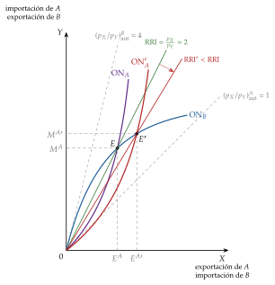
El efecto sobre el bienestar: en un país grande, crecer tiene 2 efectos de signo contrario:
un efecto renta, positivo: más posibilidades de producción a los precios de antes, el único efecto que había en el país pequeño;
un efecto relación de intercambio, negativo si la RRI empeora: cada unidad importada cuesta más exportaciones.
Con \(\mathrm{d}\overline W_0\) el aumento de la renta a la RRI inicial y \(\lambda\) la utilidad marginal de la renta, el cambio del bienestar, en unidades de \(Y\), es \[\tag{4} \frac{\mathrm{d}V}{\lambda}=\underbrace{\mathrm{d}\overline W_0}_{\text{efecto renta}}+\underbrace{M^A\,\frac{\mathrm{d}\,\mathrm{RRI}}{\mathrm{RRI}}}_{\text{efecto RRI}}:\] la pérdida por el deterioro de la RRI es su caída en porcentaje por todo lo que el país importa.
De dónde sale la (4). Con \(Y\) como numerario, la renta nacional es el valor de la producción, \(\overline W=\mathrm{RRI}\cdot X_P+Y_P\), y como la producción está en la tangencia de la FPP con la recta de precios, un cambio de la RRI no cambia la producción en primer orden (teorema de la envolvente): \(\partial\overline W/\partial\,\mathrm{RRI}=X_P\). El bienestar es la utilidad indirecta \(V(\mathrm{RRI},\overline W)\) y, por la identidad de Roy [ver tema 3.A.8], \(\partial V/\partial\,\mathrm{RRI}=-\lambda X_C\). Si el crecimiento sube la renta a precios constantes en \(\mathrm{d}\overline W_0\) y la RRI cambia en \(\mathrm{d}\,\mathrm{RRI}\), \[\frac{\mathrm{d}V}{\lambda}=\mathrm{d}\overline W_0+X_P\,\mathrm{d}\,\mathrm{RRI}-X_C\,\mathrm{d}\,\mathrm{RRI}=\mathrm{d}\overline W_0+E^A\,\mathrm{d}\,\mathrm{RRI}=\mathrm{d}\overline W_0+M^A\,\frac{\mathrm{d}\,\mathrm{RRI}}{\mathrm{RRI}},\] donde el último paso usa el comercio equilibrado, \(\mathrm{RRI}\cdot E^A=M^A\). El país se empobrece si \(M^A\,\lvert\mathrm{d}\,\mathrm{RRI}\rvert/\mathrm{RRI}>\mathrm{d}\overline W_0\).∎
Lo normal es que gane el efecto renta (gráfico 5, panel izquierdo): la RRI empeora, pero el país consume en una curva de indiferencia social más alta. Si gana el segundo, el país queda peor que antes de crecer (panel derecho): es el crecimiento empobrecedor (immiserizing growth) de Bhagwati (1958).2
«Ir por lana y volver trasquilado»: el país crece para tener más y acaba con menos, porque al vender mucho más de lo mismo hunde su propio precio.
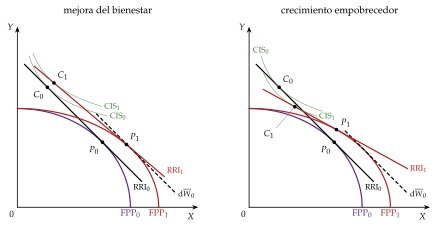
Fuente: elaboración propia a partir de Bhagwati (1958) y Gandolfo (2014a, 307-8).
Cuándo se empobrece el país: el deterioro de la RRI no basta; hacen falta a la vez:
un crecimiento muy sesgado hacia el exportable, ultraprocomercio por el lado de la producción, para que la RRI caiga mucho: es el caso de la acumulación del factor en que es intensivo el exportable (I.2.3);
una demanda exterior inelástica de sus exportaciones, para que la caída del precio no se compense con más ventas;
un país muy dependiente del comercio: \(M^A\) grande en relación con la ganancia a precios constantes, \(\mathrm{d}\overline W_0\), en la (4);
que no aplique una política comercial óptima: con el arancel óptimo [ver tema 3.B.7], el crecimiento empobrecedor no puede darse.
iii) Implicaciones
El crecimiento solo empobrece si hay una distorsión: el poder de mercado que el país no explota o una política equivocada. Por eso puede ocurrir también en un país pequeño con un arancel: si crece el sector protegido, el importable, el país agranda una producción ineficiente valorada a precios interiores distorsionados y puede perder bienestar.
Política económica: un país grande que crece sesgado hacia lo que exporta tiene un argumento de relación de intercambio para intervenir. El arancel óptimo, o un impuesto a la exportación, le hace internalizar su poder de mercado [ver tema 3.B.7]; es un argumento para el país, no para el mundo, porque gana a costa del resto.
La lectura histórica: es la intuición de los exportadores de materias primas que temían que su crecimiento hundiera el precio de lo que vendían, y que la tesis de Prebisch y Singer convierte en una tendencia secular (apartado II.2).
c) Valoración
El crecimiento empobrecedor es una posibilidad teórica con condiciones exigentes, no lo habitual; su valor está en mostrar que el efecto precio puede dominar y que la política comercial importa en un país grande.
Queda abierta una pregunta: ¿qué tipo de crecimiento es más probable que esté sesgado hacia el exportable? Depende de su origen, que es lo que vemos ahora.
I.2.3. Según su origen: la acumulación de factores
Nexo: hasta ahora el crecimiento era un desplazamiento de la FPP sin causa. Ahora distinguimos su origen, la acumulación de factores y el progreso técnico (I.2.4), para ver si cambian las conclusiones sobre el comercio y el bienestar.
a) Idea
¿Qué sesgo tiene el crecimiento que nace de acumular un factor? El teorema de Rybczynski (1955) responde: si crece el factor en que es intensivo el exportable, el sesgo es tan fuerte que el otro sector se contrae.
b) Modelo
i) Supuestos
Los del apartado I.2, con un país pequeño: los precios de los bienes están dados.
Especialización incompleta: el país produce los 2 bienes.
Para aislar el efecto producción, los 2 bienes son normales y el efecto consumo es neutral (preferencias homotéticas).
ii) Desarrollo
Teorema de Rybczynski [ver tema 3.B.5]: a precios de los bienes constantes, si aumenta la dotación de un factor y la del otro no cambia, la producción del bien intensivo en ese factor aumenta más que proporcionalmente y la del otro disminuye en términos absolutos. Que los precios de los factores tampoco cambien no es un supuesto, sino una consecuencia: con los precios de los bienes fijos y los 2 bienes producidos, las curvas de coste unitario fijan \(w\) y \(r\).
Intuición, con un aumento de \(\overline K\): como \(w/r\) no cambia, los 2 sectores mantienen su \(K/L\). La única forma de emplear el capital nuevo es dar más peso a \(X\), que usa más capital por trabajador; pero \(X\) necesita también trabajo, y como no hay más, \(Y\) tiene que cedérselo. El efecto magnificación en cantidades es \[\tag{5} \hat{\overline K}>\hat{\overline L}=0\;\Longrightarrow\;\hat X>\hat{\overline K}>0>\hat Y.\]
Gráficamente (gráfico 6, panel izquierdo, el mismo que en la teoría tradicional [ver tema 3.B.5]): la FPP se expande sesgada hacia \(X\); a la RRI inicial se produce más \(X\) y menos \(Y\). La nueva producción cae, necesariamente, en la región ultraprocomercio.
Volvamos a Corea del Sur: entre los años 60 y los 90 su capital por trabajador crece a gran ritmo y su producción y sus exportaciones se desplazan hacia las manufacturas intensivas en capital, como el acero, los barcos o los automóviles, mientras pierde peso la agricultura.
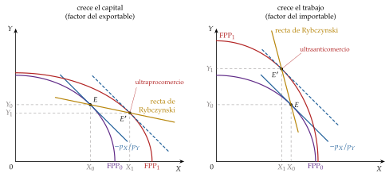
Fuente: elaboración propia a partir de Rybczynski (1955).
iii) Implicaciones
Si crece el factor en que es intensivo el exportable (el capital en \(A\)), el crecimiento es ultraprocomercio por el lado de la producción y, con un consumo neutral, aumentan las exportaciones (la producción de \(X\) crece más que su consumo) y las importaciones (la de \(Y\) cae y su consumo crece): el país se especializa más y comercia más.
Si el país es grande, ese mismo sesgo empeora la RRI: el aumento de la oferta de exportaciones baja \(p_X\) y el de la demanda de importaciones sube \(p_Y\). Es la vía típica al crecimiento empobrecedor (I.2.2).
Si crece el factor en que es intensivo el importable (el trabajo en \(A\)), el crecimiento es ultraanticomercio: el país sustituye importaciones, el comercio cae y, si es grande, su RRI mejora (gráfico 6, panel derecho).3
c) Extensiones: la enfermedad holandesa
La misma lógica, con un factor específico, explica por qué el descubrimiento de un recurso natural puede desindustrializar a un país pequeño [ver tema 3.B.5].4 El sector en auge encoge a los demás sectores comerciables por 2 efectos:
el efecto movimiento de recursos: el sector en auge, más rentable, atrae trabajo (y capital) de la industria;
el efecto gasto: la renta adicional sube la demanda de bienes no comerciables y su precio en relación con el de los comerciables, que fija el mercado mundial. Es una apreciación del tipo de cambio real, y la industria pierde recursos y competitividad.
«Morir de éxito»: la riqueza del recurso arrincona a la industria.
No hace falta que cambie la RRI: es una reasignación interna, no un efecto de los precios mundiales, y por eso no debe confundirse con el deterioro de la RRI del país grande. Si la industria tiene aprendizaje por la práctica, la pérdida puede ser permanente y frenar el crecimiento, que es el tipo de canal dinámico que estudia el bloque II.
Para saber más. Un vídeo divulgativo sobre la abundancia de recursos naturales y el desarrollo, la llamada «maldición de los recursos», que se apoya en la enfermedad holandesa: «Por qué los países pobres tienen tantos recursos naturales».
I.2.4. Según su origen: el progreso técnico
a) Idea
¿Da lo mismo crecer con más factores que con mejor tecnología? Findlay y Grubert (1959) muestran que el progreso técnico en un sector se parece a la acumulación de factores, y que su efecto sobre el comercio depende del sector en que ocurre y de su sesgo.
Los tipos de progreso técnico neutral [ver tema 3.A.11], con \(A_t\) el nivel tecnológico (gráfico 7, el mismo que en la teoría de la producción, donde los factores se escriben \(z_K\) y \(z_L\)):
neutral en sentido de Hicks, \(A_tF(K,L)\): para una proporción \(K/L\) dada, la relación marginal de sustitución técnica (RMST) no cambia; las isocuantas se acercan al origen a lo largo de cada rayo sin cambiar de pendiente;
neutral en sentido de Solow, aumentador del capital, \(F(A_tK,L)\): para una relación trabajo-producto \(L/Y\) dada, no cambian las participaciones de los factores;
neutral en sentido de Harrod, aumentador del trabajo, \(F(K,A_tL)\): para una relación capital-producto \(K/Y\) dada, no cambian las participaciones; es como si hubiera más trabajadores.5
El sesgo es otra cosa: el progreso es ahorrador de capital si, para un \(K/L\) dado, sube más la productividad marginal del trabajo que la del capital, y ahorrador de trabajo en el caso contrario. Aumentar un factor no es lo mismo que sesgar el progreso a su favor: si la elasticidad de sustitución es menor que 1, el progreso aumentador del capital ahorra capital.
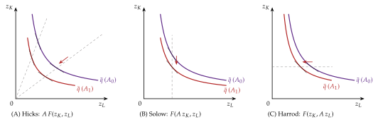
Fuente: elaboración propia a partir de Acemoglu (2009, cap. 2).
b) Modelo
i) Supuestos
Los del apartado I.2, con un país pequeño: los precios de los bienes están dados.
Progreso técnico exógeno en un solo sector.
No reversión de las intensidades factoriales: \(X\) es intensivo en capital, e \(Y\) en trabajo, con cualquier \(w/r\). Es clave: sin ella no se sabe qué factor es el intensivo de cada sector, y los signos de los resultados podrían invertirse.
ii) Desarrollo
El progreso en un sector tiene 2 efectos sobre la producción a precios constantes (anexo A):
un efecto coste: el sector que progresa produce más barato y, como su precio no cambia, sube la remuneración del factor en que es intensivo y baja la del otro, como en Stolper-Samuelson con el progreso en el papel de una subida del precio. Los 2 sectores usan más del factor abaratado y, para emplear todos los factores, el sector que progresa se expande y el otro se contrae. Va siempre a favor del sector que progresa, sea cual sea el sesgo;
un efecto ahorro de factores: el progreso libera el factor que ahorra, y es como si su dotación creciera (Rybczynski). Si ahorra el factor en que es intensivo el sector, refuerza el efecto coste; si ahorra el otro, se le opone.
Resultado (tabla 2): el progreso neutral equivale a la acumulación del factor en que es intensivo el sector; el sesgo solo cambia la conclusión cuando el progreso ahorra el factor del otro sector, y entonces el efecto es ambiguo.
| Sector que progresa | Neutral de Hicks | Ahorra el factor en que es intensivo el sector | Ahorra el otro factor |
|---|---|---|---|
| \(X\) (exportable) | \(X\uparrow\), \(Y\downarrow\): ultraprocomercio |
\(X\uparrow\), \(Y\downarrow\) (ahorra capital): ultraprocomercio |
\(Y\) puede crecer (ahorra trabajo): ambiguo |
| \(Y\) (importable) | \(Y\uparrow\), \(X\downarrow\): ultraanticomercio |
\(Y\uparrow\), \(X\downarrow\) (ahorra trabajo): ultraanticomercio |
\(X\) puede crecer (ahorra capital): ambiguo |
Fuente: elaboración propia a partir de Findlay y Grubert (1959) y Gandolfo (2014a). En fondo salvia, el caso neutral, que es el que se canta.
iii) Implicaciones
Si el progreso ocurre en el exportable, el comercio crece y, en un país grande, la RRI empeora; si ocurre en el importable, el comercio cae y la RRI mejora.
En un país grande, el progreso técnico en el exportable puede ser, como la acumulación, empobrecedor (I.2.2): es el temor de los exportadores de un solo producto.
c) Valoración
El origen del crecimiento importa menos de lo que parece: lo decisivo es en qué sector se concentra. Tanto la acumulación como el progreso técnico, si favorecen al exportable, aumentan el comercio y presionan la RRI a la baja.
I.3. Valoración de los efectos del crecimiento sobre el comercio
Lo que aporta: el efecto del crecimiento sobre el comercio no tiene signo a priori. Depende del sesgo del consumo y de la producción, del origen del crecimiento (qué factor crece, en qué sector hay progreso técnico) y del tamaño del país. El resultado más llamativo es que crecer puede empobrecer a un país grande especializado en productos de demanda inelástica que no aplica una política comercial óptima.
La crítica: es estática comparativa con el crecimiento como dato. Compara 2 equilibrios, sin dinámica, y no explica por qué se acumula capital ni por qué hay progreso técnico; y es posible que el propio comercio los cause.
El puente: si el comercio puede cambiar la acumulación o la innovación, la causalidad va también en el otro sentido. Una vez visto cómo el crecimiento cambia el comercio, pasamos a la especial referencia del título: cómo el comercio cambia el crecimiento.
II. Efectos del comercio internacional en el crecimiento económico
En el cante (15′30″): la apertura del bloque, de palabra (0′45″). En el apartado II.1 (8′), la lista de los 4 mecanismos, que ordena el apartado: cada modelo se sitúa en su número (0′45″); el crecimiento exógeno y Baldwin, de palabra (0′45″); las externalidades con la (6), los 3 casos y el gráfico 8, con el dicho «todo se pega menos la hermosura» (1′15″); Romer y Rivera-Batiz-Romer con la (7), el gráfico 9 y el dicho «no hay que reinventar la rueda» (2′); Grossman y Helpman con la cadena de Stolper-Samuelson en 2 flechas y el dicho «todo depende del cristal con que se mira» (1′30″); Young, Lucas y la U invertida, con «de fuera vendrá quien de casa nos echará» (0′45″); la difusión con el gráfico 10, pequeño (1′). En el apartado II.2 (2′45″): la CEPAL y la ISI (1′), la IOE con «quien no se arriesga no pasa la mar» (0′45″) y la comparación con la tabla 3 (1′). En el II.3 (1′30″), el centro-periferia y su consecuencia para el crecimiento, de palabra; el tomahawk es de apoyo. En el II.4 (2′30″), sin gráfico: la dificultad, las comparaciones entre países, las variables instrumentales y los datos de empresas. Las derivaciones de los anexos C, D y B no se cantan.
Nexo: una vez visto cómo el crecimiento cambia el comercio, pasamos a la especial referencia del título: cómo el comercio cambia el crecimiento.
Conclusión anticipada: en los modelos neoclásicos, el comercio sube el nivel de la renta y acelera la transición; en los de crecimiento endógeno puede subir también su tasa, pero no siempre ni para todos: depende de si fluyen las ideas, de en qué se especializa cada país y de sus instituciones. La evidencia apoya un efecto positivo en promedio, no automático.
Nivel frente a tasa: las ganancias estáticas (especialización, escala, variedad) suben el nivel de la renta de una vez; las ganancias dinámicas cambian su senda, con un efecto de nivel a medio plazo si el comercio estimula la acumulación o un efecto tasa permanente si estimula la innovación. También la selección de empresas es un efecto de nivel: con la apertura, las empresas más productivas exportan y las menos productivas salen del mercado, y sube la productividad media [ver tema 3.B.6].
El orden: 3 aproximaciones, la de la teoría del crecimiento (II.1), la del desarrollo (II.2) y la de la geografía económica (II.3), y después la evidencia empírica (II.4).
II.1. Aproximación desde la teoría del crecimiento económico
Por qué hay que abrir los modelos de crecimiento: los modelos de crecimiento exógeno [ver tema 3.A.43] y endógeno [ver tema 3.A.44] tratan cada país como una isla. En la realidad hay 2 interdependencias:6
tecnológicas: la mayoría de los países no inventa la tecnología que usa, sino que la adopta de los líderes;
comerciales: el comercio de bienes y de activos liga los precios relativos y las tasas de crecimiento de los países.
El punto de partida: el conocimiento es no rival (su uso por uno no impide el de otros), y por eso su producción tiene rendimientos crecientes [ver tema 3.A.44]. Si el conocimiento es el motor del crecimiento, todo lo que el comercio haga sobre él cambia el crecimiento.
Grossman y Helpman (2015) ordenan la literatura en 4 mecanismos, que sirven para situar cada modelo de este apartado:
difusión internacional del conocimiento (international knowledge spillovers): la integración hace que las ideas crucen las fronteras;
efecto escala frente a efecto competencia: un mercado mayor sube el premio a innovar, pero trae también la competencia de los rivales extranjeros;
innovación en equilibrio general: el comercio cambia los precios de los bienes y de los factores y, con ellos, el coste y la dirección de la investigación;
difusión de la tecnología: el comercio cambia los incentivos a imitar y a adoptar tecnología.
II.1.1. Modelos de crecimiento exógeno
a) Idea
Antes del crecimiento endógeno, ¿podía el comercio hacer crecer más? Para los clásicos, sí; en el modelo neoclásico, solo durante un tiempo.
b) Modelo
Los clásicos: el comercio era un motor del crecimiento, por 4 vías:
amplía el mercado y con él la división del trabajo;
da salida al excedente de una tierra y un trabajo que sin él no se usarían, la vent for surplus de Smith, como la llamó Myint (1958);
difunde las técnicas;
y, al importar alimentos, elude los rendimientos decrecientes de la tierra y retrasa el estado estacionario.
El modelo de Solow [ver tema 3.A.43]: la apertura sube el nivel de la renta, pero no su tasa a largo plazo.
Aun así, el efecto puede ser mayor que la ganancia estática:
si el comercio sube la productividad, sube el rendimiento del capital;
y se invierte más hasta un estado estacionario más alto.
Baldwin (1992) llama a esa acumulación inducida un efecto de acumulación a medio plazo (bono de crecimiento):
sube el capital por trabajador, pero el crecimiento a largo plazo no cambia;
su efecto sobre el bienestar es menor que sobre la producción, porque el capital nuevo hay que ahorrarlo;
y depende de la diferencia entre el rendimiento social y el privado del capital.
Para el mercado único europeo, el mismo argumento da efectos dinámicos mayores que los estáticos [ver tema 3.B.10].
c) Valoración
Con rendimientos decrecientes del capital, el comercio no cambia la tasa a largo plazo. Para que la cambie hay que dejarlos: es el crecimiento endógeno.
II.1.2. Externalidades del capital y apertura (Arrow, 1962; Romer, 1986)
a) Idea
En los modelos de crecimiento endógeno de 1.ª generación, el progreso técnico es un subproducto no buscado de la inversión: lo que aprende una empresa al invertir y producir (el aprendizaje por la práctica de Arrow (1962)) se desborda a las demás [ver tema 3.A.44]. Si el comercio pone a las empresas en contacto con más conocimiento, amplía ese desbordamiento: es el mecanismo 1.
«Todo se pega menos la hermosura»: lo que aprende una empresa, nacional o extranjera, pasa a las demás.
b) Modelo
i) Supuestos
Los de Solow, con ahorro constante \(s\), población que crece a la tasa \(n\) y depreciación \(\delta\), y empresas competitivas \(j\) que producen con \[\tag{6} Y_j=A\,K_j^{\alpha}L_j^{1-\alpha}E^{\eta},\qquad E=\frac{X+M}{Y}\,k,\qquad 0<\alpha<1,\ \eta\geq0,\] donde \(E\) es el conocimiento disponible, que cada empresa toma como dado; \(k\equiv K/L\) es el capital por trabajador de la economía; \(\eta\) es la intensidad de la externalidad (con \(\eta=0\), una Cobb-Douglas sin externalidad), y el grado de apertura, \((X+M)/Y\), multiplica el conocimiento al que acceden las empresas.
ii) Desarrollo
Con empresas iguales, la producción por trabajador y la tasa de crecimiento del capital por trabajador son (anexo C): \[y=A\Big(\frac{X+M}{Y}\Big)^{\eta}k^{\alpha+\eta},\qquad \gamma_k=s\,A\Big(\frac{X+M}{Y}\Big)^{\eta}k^{\alpha+\eta-1}-(n+\delta).\]
Los 3 casos, según \(\alpha+\eta\) [ver tema 3.A.44]:
si \(\alpha+\eta<1\), quedan rendimientos decrecientes y hay estado estacionario: la apertura sube su nivel, y el crecimiento solo durante la transición, como en Solow;
si \(\alpha+\eta=1\), la economía es un modelo \(AK\): \(\gamma=s\,A\,[(X+M)/Y]^{\eta}-(n+\delta)\), y abrirse sube la tasa de crecimiento para siempre (gráfico 8, el panel central del de las externalidades en el crecimiento endógeno, con el grado de apertura [ver tema 3.A.44]);
si \(\alpha+\eta>1\), el estado estacionario es inestable y la tasa crece sin límite.
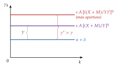
iii) Implicaciones
A mayor apertura, mayor tasa de crecimiento, pero solo en el caso \(\alpha+\eta=1\); en el caso general, mayor nivel de renta.
Como el rendimiento social del capital supera al privado, el mercado invierte de menos: hay razones para subvencionar la inversión [ver tema 3.A.44].
Con el capital humano en lugar del físico, la externalidad del capital humano medio de Lucas (1988) hace que la apertura y los flujos de capital humano cambien el crecimiento de cada país; y para Lucas (1993), los milagros asiáticos se explican por el aprendizaje por la práctica al producir bienes cada vez más complejos, para lo que hacen falta los mercados exteriores (II.1.5).
El test de junio de 2024 (pregunta 25) llama a este modelo «modelo de Lucas de externalidades». Conviene saber los 2 nombres: la externalidad del capital físico es de Arrow y Romer; la de Lucas (1988) es la del capital humano medio [ver tema 3.A.44].
c) Valoración
Da un canal sencillo del comercio al crecimiento, pero el efecto tasa exige el filo de la navaja \(\alpha+\eta=1\), y el grado de apertura es una caja negra: no dice cómo trae el comercio el conocimiento. Para eso hay que modelizar la innovación.
II.1.3. Romer (1990) y la integración de Rivera-Batiz y Romer (1991)
a) Idea
En los modelos de 2.ª generación, el progreso técnico es el resultado de una inversión deliberada en I+D: la invención de nuevas variedades de bienes intermedios, que se paga con el monopolio que da la patente [ver tema 3.A.44].
¿Crece más el mundo si se integran 2 economías iguales? Sin diferencias entre ellas no hay ventaja comparativa: el único efecto es el de la escala de la investigación. Ilustra los mecanismos 1 y 2.
b) Modelo
i) Supuestos
Los de Romer: un bien final que usa \(N_t\) variedades de bienes intermedios, cada una de un monopolista con patente; un sector de I+D con libre entrada que crea variedades con investigadores, \(L_I\), apoyándose en las ideas ya inventadas, y hogares de Ramsey, con tasa de descuento \(\rho\) y \(\theta\) la inversa de la elasticidad de sustitución intertemporal. La población, \(L=L_Y+L_I\), se reparte entre la producción y la investigación.
La ecuación de las ideas: \(\dot N_t=\eta_I\,L_I\,N_t\), con \(\eta_I\) la productividad de la investigación.
ii) Desarrollo
La tasa de crecimiento es \(\gamma=\eta_I L_I\) y, en el equilibrio de mercado,
\[\gamma^{\mathrm E}=\frac{\alpha\,\eta_I\,L-\rho}{\alpha+\theta}\tag{7}\]
La tasa sube con el número de personas que pueden investigar (\(L\)), el efecto escala, y con la productividad de la investigación (\(\eta_I\)), y baja con la impaciencia (\(\rho\)).
Gráficamente (gráfico 9), el equilibrio es el corte de 2 rectas en el plano \((\gamma,r)\):
la de los hogares (la ecuación de Euler), \(r=\rho+\theta\gamma\), creciente: para crecer más hay que ahorrar más, y eso exige más interés;
la de la tecnología (la libre entrada en la I+D), \(r=\alpha\,\eta_I\,L_Y=\alpha\,\eta_I\,L-\alpha\gamma\), decreciente: cuantos más investigadores, menos trabajadores en el bien final y menos rinde cada patente.
La integración:7 unir 2 economías iguales que intercambian bienes e ideas equivale a pasar de \(L\) a \(2L\) en la (7): la recta de la tecnología sube y la tasa de crecimiento de las 2 aumenta de forma permanente, a \((2\,\alpha\,\eta_I\,L-\rho)/(\alpha+\theta)\). Hay 2 efectos:
el efecto escala: cada invento se vende en un mercado doble, y el valor de una patente se duplica;
el efecto redundancia: ya no se inventa 2 veces lo mismo, porque las ideas de un país las usan los investigadores del otro.
«No hay que reinventar la rueda»: con la integración, nadie investiga lo que el otro ya ha inventado.
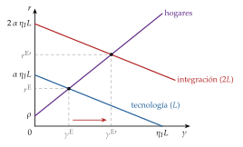
iii) Implicaciones
La integración entre países parecidos tiene un efecto tasa permanente, no solo de nivel, siempre que haga que los rendimientos crecientes de la I+D se aprovechen a escala mundial.
Si solo se integran los bienes, sin que viajen las ideas, el efecto es menor y puede desaparecer; si viajan las ideas, basta para elevar la tasa. Las políticas que limitan los flujos de ideas (visados, inversión extranjera, telecomunicaciones) frenan el crecimiento tanto como las que limitan el comercio [ver tema 3.B.10].
c) Valoración
El efecto escala es fuerte: la evidencia no muestra que los países más poblados crezcan más deprisa [ver tema 3.A.44]. Con rendimientos decrecientes en las ideas, la integración sube el nivel de la renta y el crecimiento durante la transición, no la tasa a largo plazo.
Solo vale para países parecidos: con diferencias de dotaciones o de tecnología aparece la ventaja comparativa, que es lo que estudian Grossman y Helpman.
II.1.4. Ventaja comparativa, política comercial y coste de la I+D (Grossman y Helpman)
a) Idea
Cuando los países son distintos, el comercio no solo amplía la escala: reasigna los recursos de cada país entre la I+D y la producción según su ventaja comparativa. Es el mecanismo 3: la integración y la política comercial cambian los precios de los factores y, con ellos, el coste de innovar.
b) Modelo
i) Supuestos
Una economía pequeña que comercia 2 bienes finales a precios mundiales dados: uno de alta tecnología, intensivo en capital humano, que usa las variedades que crea la I+D, y otro tradicional, intensivo en trabajo.
2 factores, el capital humano (trabajo cualificado), \(H\), y el trabajo (no cualificado), \(L\); la I+D usa sobre todo capital humano.
ii) Desarrollo
La política comercial cambia el precio interior de los bienes y, por Stolper-Samuelson, las remuneraciones de los factores: lo que sube el precio relativo de un bien sube la remuneración del factor que usa intensivamente [ver tema 3.B.5]. Si encarece el capital humano, encarece la I+D (anexo D):
un arancel sobre el bien tradicional sube el salario del trabajo no cualificado y baja la remuneración del capital humano: la I+D se abarata, atrae capital humano y el crecimiento aumenta;
proteger o promover el bien de alta tecnología hace lo contrario: encarece el capital humano, lo lleva de la I+D a la producción y el crecimiento cae.
«Todo depende del cristal con que se mira»: el mismo arancel sube o baja el crecimiento según lo que el país importe.
iii) Implicaciones
Según el patrón de comercio, como en la caja del crecimiento endógeno [ver tema 3.A.44]:
en un país que exporta bienes intensivos en I+D (en trabajo cualificado) e importa bienes intensivos en trabajo no cualificado, un arancel sobre lo que importa abarata la I+D y el crecimiento aumenta;
en un país que importa bienes intensivos en I+D, como la mayoría de los países en desarrollo, el mismo arancel encarece el factor que usa la I+D y el crecimiento cae: le conviene la apertura.
Crecer más no es estar mejor: los efectos son sobre la tasa de crecimiento, no sobre el bienestar. Un arancel que acelera el crecimiento tiene sus costes estáticos [ver tema 3.B.7], y la subvención a la I+D es un instrumento más directo.
Con 2 países, cada uno se especializa según su ventaja comparativa en la investigación o en la manufactura, y una política que desplace el gasto hacia el bien del país con ventaja en la I+D reduce el crecimiento mundial, porque obliga a ese país a dedicar recursos a producir en vez de investigar.
Norte y Sur: el país con ventaja comparativa en la investigación crece más, y el otro puede especializarse en bienes que no innovan. Con escalera de calidades, el Norte innova y el Sur imita: cuando el Sur aprende a copiar un bien, su producción emigra allí, un ciclo del producto como el de Vernon (1966), ahora endógeno [ver tema 3.B.6].
Grossman y Helpman en el test. El mecanismo de Stolper-Samuelson y el coste de la I+D es el del modelo de economía pequeña con 2 factores, recogido en el libro; el artículo de Grossman y Helpman (1990), con un solo factor y 2 países, da la conclusión de política del punto anterior. 2 preguntas oficiales dan por buena la misma idea con palabras distintas:
julio de 2022 (pregunta 33): si el país exporta bienes intensivos en I+D, le conviene un arancel. Coincide con el modelo: el arancel recae sobre lo que importa, intensivo en trabajo, y abarata el capital humano que usa la I+D;
septiembre de 2014 (pregunta 31): la protección arancelaria de los sectores intensivos en I+D mejora el crecimiento. Coincide solo leída en sentido amplio, como la de 2022 (el país especializado en sectores intensivos en I+D crece más con aranceles), y se marca por eliminación, porque las otras 3 opciones son falsas. Al pie de la letra, proteger la producción del bien intensivo en capital humano frena el crecimiento.
Regla para el examen: el arancel ayuda al crecimiento cuando abarata el factor que usa la I+D, es decir, cuando lo pone un país que exporta bienes intensivos en I+D sobre lo que importa.
c) Valoración
Es la versión dinámica de Stolper-Samuelson: da una razón de crecimiento, no de bienestar, para la política comercial. Pero la conclusión cambia con el modelo, con el alcance (nacional o internacional) de la difusión del conocimiento y con la economía política: la protección rara vez se reparte según la ventaja comparativa en la I+D.
II.1.5. Otros canales: aprendizaje, competencia y selección
a) Idea
El comercio no siempre empuja el crecimiento: puede llevar a un país a especializarse en lo que no aprende, y la competencia de fuera anima a innovar a unos y desanima a otros. Es el mecanismo 2 en su versión menos optimista.
b) Modelos
Aprendizaje por la práctica y especialización: si el aprendizaje en cada bien se agota con el tiempo y se desborda dentro de cada país, el libre comercio lleva a los países atrasados a especializarse en los bienes en los que ya no se aprende, y a los avanzados en los nuevos. El país atrasado tiene un progreso técnico y un crecimiento menores o iguales que en autarquía, aunque puede ganar en bienestar por las ganancias estáticas; el avanzado crece más. Es la versión dinámica de la industria naciente [ver tema 3.B.8].
El milagro asiático como aprendizaje: para Lucas (1993), el crecimiento de Corea del Sur exige que los trabajadores aprendan produciendo bienes cada vez más complejos, y solo los mercados exteriores dan la escala para hacerlo con muchos bienes a la vez.
Escala frente a competencia: abrirse amplía el mercado de cada invento, pero trae competidores. Con la relación en U invertida entre competencia e innovación [ver tema 3.A.44], la competencia empuja a innovar a las empresas cercanas a la frontera, para escapar de ella, y desanima a las rezagadas: el efecto neto depende de lo lejos que estén las empresas nacionales de la frontera.
«De fuera vendrá quien de casa nos echará»: la competencia extranjera amenaza a las empresas rezagadas y espolea a las punteras.
Selección e insumos: la apertura pasa cuota de mercado de las empresas menos productivas a las más productivas; en Chile, tras la apertura de finales de los 70, la productividad subió dentro de las plantas que competían con importaciones y por la reasignación hacia las más eficientes; y en la India, la rebaja de los aranceles de los insumos de los 90 permitió a las empresas lanzar más productos nuevos.
c) Valoración
Estos canales explican por qué la apertura no tiene el mismo efecto en todos los países: depende de en qué se especialicen, de lo cerca que estén de la frontera y de lo que puedan aprender de fuera, que es el último mecanismo.
II.1.6. Difusión tecnológica e imitación
a) Idea
Los países seguidores no tienen que inventar: pueden imitar. Es el mecanismo 4, y Barro y Sala-i-Martin (1997) lo modelizan combinando la convergencia neoclásica con la innovación endógena.
b) Modelo
El líder, con \(N_1\) variedades, innova; el seguidor, con \(N_2<N_1\), imita con un coste \(\nu(N_2/N_1)\) creciente en la parte ya imitada: cuanto más ha copiado, menos le queda por copiar fácilmente.
Como imitar es más barato que innovar, el seguidor crece más deprisa mientras está lejos y converge a la tasa del líder (gráfico 10): hay convergencia condicional [ver tema 3.A.45]. El comercio, que pone en contacto con las ideas de fuera, acelera la difusión.
Volvamos a Corea del Sur: pasó de imitar a innovar, y hoy está entre los países que más invierten en I+D en relación con su PIB.
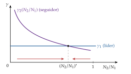
Fuente: elaboración propia a partir de Barro y Sala-i-Martin (1997).
c) Evidencia empírica
Las rentas convergen al ritmo de la liberalización entre los países que se integran, como los fundadores de la Comunidad Económica Europea; y la productividad de un país sube con la I+D de sus socios comerciales, tanto más cuanto más abierto está.
d) Valoración
La difusión explica por qué la apertura favorece a los países atrasados que saben absorber la tecnología; pero la imitación se encarece al acercarse a la frontera, y a partir de ahí solo la innovación propia mantiene el crecimiento.
Recapitulando el apartado: la teoría del crecimiento da 4 canales y un signo abierto. La teoría del desarrollo se pregunta qué estrategia comercial conviene a un país pobre.
II.2. Aproximación desde la teoría del desarrollo económico
Nexo: la teoría del crecimiento pregunta por los mecanismos; la del desarrollo, por la estrategia. ¿Debe un país pobre protegerse para industrializarse o abrirse para exportar? Las 2 respuestas se probaron de los años 50 a los 80 [ver tema 3.B.28].
II.2.1. La CEPAL y la industrialización por sustitución de importaciones
a) Idea
Para la escuela estructuralista de la Comisión Económica para América Latina (CEPAL), el comercio según la ventaja comparativa es un obstáculo para el crecimiento de la periferia, especializada en productos primarios.
b) Modelo
La tesis de Prebisch y Singer: la RRI de la periferia, la de sus productos primarios frente a las manufacturas del centro, tiende a empeorar a largo plazo, por 2 causas:
por la demanda: la de primarios crece menos que la renta (ley de Engel),8 y el centro protege su agricultura;
por la oferta: en el centro, sindicatos y poder de mercado retienen las ganancias de productividad como salarios y márgenes; en la periferia, la competencia las traslada a los precios.
Es la lectura histórica del crecimiento empobrecedor (I.2.2): crecer exportando primarios abarata lo que se vende.
La restricción externa: con la ley de Thirlwall, un país no puede crecer a largo plazo más deprisa de lo que permite su balanza de pagos, \(\gamma_Y=(\varepsilon_{X,Y^*}/\varepsilon_{M,Y})\,\gamma_{Y^*}\), con \(\varepsilon_{X,Y^*}\) la elasticidad de sus exportaciones a la renta mundial, \(\varepsilon_{M,Y}\) la de sus importaciones a su renta y \(\gamma_{Y^*}\) el crecimiento del resto del mundo: si exporta bienes con poca elasticidad renta e importa bienes con mucha, crece menos que el centro.
La implicación: la industrialización por sustitución de importaciones (ISI), proteger la industria nacional hasta que, con la escala y el aprendizaje, produzca con costes competitivos: el argumento de la industria naciente [ver tema 3.B.8].9 Se aplicó en América Latina, la India, buena parte de África y España, de los 50 a los 70.
c) Valoración
A favor: los países ricos se industrializaron con protección, de Hamilton (1791) en Estados Unidos a la Alemania de List (1841), y la negaron después a los pobres.
En contra:
hay que elegir qué industrias proteger, y la protección atrae la búsqueda de rentas;
la industria protegida, sin competencia ni escala, se quedó cara, las exportaciones no crecieron y llegaron las crisis de balanza de pagos;
aislarse priva de la difusión tecnológica que trae el comercio (II.1.6).
La tesis en los datos: la RRI de los primarios frente a las manufacturas tiende a caer, pero la tendencia es débil y con rupturas.
II.2.2. La industrialización orientada a la exportación
a) Idea
Industrializarse vendiendo al mundo, empezando por las manufacturas intensivas en trabajo, en las que se tiene ventaja comparativa, y subiendo de gama al acumular capital humano y tecnología. La siguieron desde los 60 los 4 tigres asiáticos: Hong Kong, Singapur, Taiwán y Corea del Sur [ver tema 3.B.28].
«Quien no se arriesga no pasa la mar»: competir fuera obliga a mejorar.
b) Modelo
Qué es: una estrategia que no discrimina contra la exportación. El tipo de cambio efectivo de lo que se exporta es al menos igual que el de lo que se importa (neutralidad de incentivos entre vender dentro y fuera), cuando la ISI protegía el mercado interior y penalizaba exportar. No es solo subvencionar la exportación; sus instrumentos, los mismos que en la economía del desarrollo [ver tema 3.B.28], son:
un tipo de cambio realista;
acceso libre a los insumos importados para exportar;
apoyos (crédito, subvenciones) condicionados a vender en los mercados exteriores, que disciplinaban a las empresas.
Sus objetivos, con los canales del apartado II.1: aumentar la competitividad, aprovechar la escala de un mercado mundial y aprender de los compradores y de la tecnología extranjeros.
Volvamos a Corea del Sur: con las reformas de mediados de los 60 (devaluación, insumos libres de aranceles para exportar y crédito ligado a las exportaciones), sus ventas al exterior pasaron del 11 % del PIB en 1970 al 44 % en 2024.
c) Valoración
Funcionó donde se combinó con ahorro e inversión altos, educación y estabilidad macroeconómica; la comparación con la ISI se hace a continuación.
II.2.3. La comparación, con evidencia
Las 2 estrategias, frente a frente (tabla 3).
| Sustitución de importaciones (ISI) | Orientación a la exportación (IOE) | |
|---|---|---|
| Objetivo | Producir en casa lo que se importa | Vender al mundo lo que se produce |
| Instrumentos | Aranceles, cuotas y licencias; tipo de cambio sobrevalorado | Tipo de cambio realista; insumos libres de aranceles; apoyos ligados a exportar |
| Sesgo | Contra la exportación | Neutral o ligeramente a favor de exportar |
| Resultados | Industria cara, búsqueda de rentas, crisis de balanza de pagos y de deuda (América Latina, la India) | Crecimiento rápido y sostenido (los tigres asiáticos), con ahorro, educación y estabilidad |
Fuente: elaboración propia a partir de Bhagwati (1988), Krueger (1978) y Banco Mundial (1993).
Los estudios de los 70: los proyectos de la Oficina Nacional de Investigación Económica de Estados Unidos (NBER) sobre los regímenes de comercio de los países en desarrollo y, después, el informe del Banco Mundial sobre el milagro de Asia oriental concluyeron que la orientación exterior daba mejores resultados.
Los matices:
no fue solo el comercio: para Rodrik (1995), el motor en Corea del Sur y Taiwán fue un auge de la inversión coordinado por el Estado, y las exportaciones lo siguieron;
buena parte del crecimiento asiático fue acumulación de factores más que de productividad: un milagro de la transpiración más que de la inspiración;
y la IOE fue también una política industrial, con intervenciones selectivas que la nueva literatura vuelve a estudiar.
Hoy, la sustitución de importaciones vuelve como política industrial de autonomía estratégica [ver tema 3.B.8].
II.3. Aproximación desde la economía geográfica
a) Idea
Nexo: los modelos anteriores miran a los países; la nueva geografía económica mira a dónde se instala la actividad y por qué eso cambia el crecimiento de cada región [ver tema 3.B.6].
Primera y segunda naturaleza: la actividad se concentra por ventajas naturales (un puerto, un yacimiento: la cuenca del Ruhr con su carbón) o porque las empresas y los trabajadores se atraen entre sí, aunque los lugares sean iguales.
2 tipos de fuerzas: las centrípetas (aglomeración) y las centrífugas (dispersión); su equilibrio depende de los costes de comerciar.
b) Modelo: el centro-periferia
i) Supuestos
2 regiones iniciales iguales; una agricultura \(X\), numerario, con trabajadores inmóviles, y unas manufacturas en competencia monopolística con rendimientos crecientes, que absorben una parte \(\mu\) del gasto y emplean trabajadores móviles, con \(\lambda_i\) la cuota de la región \(i\); costes de transporte iceberg \(\tau\) [ver tema 3.B.6].
ii) Desarrollo
2 fuerzas de aglomeración, el vínculo de la demanda (las empresas quieren estar donde está el mercado) y el del coste de la vida (los trabajadores quieren estar donde las variedades son baratas), compiten con una de dispersión, la competencia en el mercado local, junto con la demanda agrícola inmóvil. Los trabajadores se mueven hacia la región de mayor salario real \(\omega_i\) (anexo B).
Con la libertad comercial \(\phi_\tau\equiv\tau^{1-\sigma}\) baja, la industria se reparte; cuando supera el punto de ruptura \(\phi^{\mathrm r}_\tau\), se concentra en una región, que se convierte en el centro industrial, y la otra queda como periferia agrícola, y no vuelve a dispersarse hasta bajar del punto de sostenibilidad \(\phi^{\mathrm s}_\tau\): hay histéresis (el diagrama del tomahawk, gráfico 11, el mismo que en la nueva teoría del comercio [ver tema 3.B.6]).

Fuente: elaboración propia a partir de Baldwin et al. (2003, cap. 2) y Fujita, Krugman y Venables (1999, cap. 5).
iii) Implicaciones
La integración puede crear un centro y una periferia entre regiones que empezaron iguales [ver tema 3.B.10]: el comercio cambia dónde se crece.
c) Extensiones: geografía y crecimiento
Si se añade la innovación de Romer con desbordamientos del conocimiento que se debilitan con la distancia:
abaratar el comercio de bienes favorece la aglomeración, mientras que abaratar la difusión del conocimiento entre regiones favorece la dispersión, y la aglomeración acelera el crecimiento de las 2 regiones;
con derrames locales, la región que concentra la industria concentra también la I+D, que es allí más productiva: el mundo crece más deprisa, pero las rentas divergen;
la misma lógica explica los despegues: al bajar los costes del comercio, la industria se concentra en el Norte, que despega, y cuando después se abarata la difusión de las ideas, el Sur se industrializa y converge.
d) Valoración
Es un modelo muy estilizado, sensible a los supuestos y con conclusiones de bienestar ambiguas; su mérito es mostrar que la integración puede ir con divergencia de rentas aunque el mundo crezca más, la base de la política regional [ver tema 3.B.40].
II.4. Evidencia empírica
Nexo: la teoría deja el signo abierto; ¿qué dicen los datos?
La dificultad, el huevo y la gallina del enganche: separar la causa del efecto.
causalidad inversa: los países que crecen comercian más, como muestra el bloque I;
variables omitidas: las instituciones, la geografía o la estabilidad macroeconómica mueven a la vez el comercio y el crecimiento;
medición: el comercio sobre el PIB es un resultado, no una política, y las políticas comerciales son difíciles de resumir en un número.
a) Comparaciones entre países
Panagariya (2004), con datos del Banco Mundial de 1961 a 1999, llama milagros a los países en desarrollo que crecieron un 3 % o más al año en renta por habitante y desastres a los que la vieron caer: casi no hay milagros sin un crecimiento rápido del comercio, y los desastres rara vez lo tienen.
Sachs y Warner (1995) clasifican a los países como abiertos o cerrados con 5 criterios (aranceles, barreras no arancelarias, prima del mercado negro de divisas, socialismo y monopolio estatal de la exportación): entre 1970 y 1989, los países en desarrollo abiertos crecieron un 4,5 % anual por habitante, y los cerrados, un 0,7 %.
La crítica de Rodríguez y Rodrik (2000): esos indicadores miden mal las barreras al comercio o recogen otras malas políticas e instituciones, y no prueban que bajar aranceles haga crecer más.
b) Variables instrumentales
Frankel y Romer (1999) usan la geografía (el tamaño y la distancia de los socios) como instrumento del comercio: un punto más de comercio sobre el PIB eleva la renta por habitante entre medio y 2 puntos. Alcalá y Ciccone (2004) lo confirman con la apertura medida a precios en paridad de poder adquisitivo, aun controlando por instituciones y geografía.
Pero la geografía puede afectar a la renta por otras vías: controlando por las instituciones, la apertura pierde su efecto directo, y el comercio actúa sobre todo a través de ellas, como el atlántico, que en la Europa moderna fortaleció a los comerciantes frente a los monarcas.
Feyrer (2019) usa un instrumento que cambia con el tiempo, el abaratamiento del transporte aéreo, que acerca más a unos pares de países que a otros: la elasticidad de la renta al comercio es de 0,5, y explica un 17 % de la variación del crecimiento entre países entre 1960 y 1995. Con la llegada de los grandes portacontenedores, que solo caben en puertos profundos, Altomonte, Bonacorsi y Colantone (2018) estiman una elasticidad del PIB por habitante al comercio de 0,3 entre 1995 y 2007 (un documento de trabajo, que hay que leer con cautela).
c) Liberalizaciones y datos de empresas
Las liberalizaciones: con las fechas en que cada país se abrió, Wacziarg y Welch (2008) hallan que, entre 1950 y 1998, el crecimiento sube de media unos 1,5 puntos tras liberalizar, la inversión entre 1,5 y 2 puntos del PIB y el comercio unos 5 puntos del PIB, con grandes diferencias entre países. Las grandes rebajas de aranceles tienen un efecto positivo en promedio sobre el crecimiento, pero muy distinto según los países.
Comercio e innovación: en 12 países europeos, la competencia de las importaciones chinas aumentó la innovación dentro de las empresas y reasignó el empleo a las más avanzadas, el 14 % de la mejora tecnológica europea entre 2000 y 2007; en Estados Unidos, en cambio, las patentes cayeron en los sectores más expuestos. Es el efecto competencia frente al efecto escala, en los datos.
d) Valoración
Los puntos de acuerdo: el comercio se asocia a más renta y, tras las liberalizaciones, a más crecimiento en promedio. Parece casi una condición necesaria: las 13 economías que crecieron un 7 % anual o más durante al menos 25 años desde 1950 aprovecharon todas la economía mundial.
Pero no suficiente: su efecto depende de lo que lo acompaña (instituciones, estabilidad macroeconómica, capital humano para absorber la tecnología e inversión) y es muy distinto según los países.
Conclusión
Recapitulación:
En conclusión, la relación entre comercio y crecimiento va en los 2 sentidos.
El crecimiento cambia el comercio según su sesgo y su origen: la acumulación del factor del exportable o el progreso en ese sector aumentan el comercio y, en un país grande, empeoran la RRI, hasta poder empobrecerlo.
El comercio cambia el crecimiento: en los modelos neoclásicos sube el nivel de la renta y acelera la transición; en los endógenos puede subir la tasa a través de la difusión de las ideas, el tamaño del mercado, la competencia y el coste de la I+D, aunque también puede llevar a un país a especializarse en sectores que no aprenden.
La experiencia del desarrollo favorece la orientación a la exportación frente a la sustitución de importaciones, y la geografía económica advierte de que la integración puede concentrar la actividad.
Relevancia:
La relación se ve en los datos: en las 2 últimas recesiones mundiales el comercio cayó mucho más que el PIB (el volumen del comercio de mercancías, un 12,2 % en 2009 y un 5,3 % en 2020).
Con el comercio estancado en relación con el PIB y la vuelta de los aranceles, saber si la apertura afecta al nivel o a la tasa de crecimiento es saber cuánto cuesta cerrarse.
Extensiones:
La nueva teoría y la selección de empresas [ver tema 3.B.6]; la política comercial y la industria naciente [ver tema 3.B.7] [ver tema 3.B.8]; la integración y sus efectos dinámicos [ver tema 3.B.10]; las cadenas globales de valor [ver tema 3.B.18]; el crecimiento endógeno [ver tema 3.A.44] y su contrastación [ver tema 3.A.45]; las teorías del desarrollo [ver tema 3.B.28].
Opinión:
La apertura parece una condición necesaria para crecer deprisa durante mucho tiempo, pero no suficiente: sin estabilidad macroeconómica, instituciones y capital humano no se traduce en crecimiento.
Idea final:
¿Qué fue antes, el huevo o la gallina? En el comercio y el crecimiento la pregunta tiene respuesta: ninguno de los 2, porque se alimentan el uno al otro.
El crecimiento da al país qué vender y el comercio le da las ideas y los mercados para seguir creciendo; la política económica decide si ese círculo es virtuoso.
A. Anexo: el progreso técnico sesgado a precios constantes
En la caja de Edgeworth de los factores (gráfico 12, la misma caja que la de Rybczynski en la teoría tradicional [ver tema 3.B.5]): con progreso neutral en \(X\) y los precios de los bienes dados, sube la renta del capital en relación con el salario (efecto coste). Los 2 sectores se hacen más intensivos en trabajo: los rayos de \(X\) y de \(Y\) pierden pendiente y su nuevo corte, sobre la curva de contrato, queda más lejos de \(O_X\). \(X\) emplea más trabajo y, con su tecnología mejor, produce más; \(Y\) emplea menos de los 2 factores y produce menos. La no reversión de intensidades garantiza que el rayo de \(X\) sigue por encima del de \(Y\).
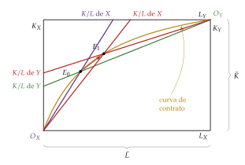
Fuente: elaboración propia a partir de Findlay y Grubert (1959).
El álgebra de Jones [ver tema 3.B.5]. Con \(a_{ij}\) el requerimiento unitario del factor \(i\) en el bien \(j\), \(s_{ij}\) la participación del factor \(i\) en el coste de \(j\), \(\ell_{ij}\) la fracción del factor \(i\) empleada en \(j\), \(\sigma_j\) la elasticidad de sustitución de \(j\) y \(\hat x\equiv\mathrm dx/x\), el progreso en \(X\) reduce los requerimientos, a precios de los factores dados, en \(b_{LX}\geq0\) y \(b_{KX}\geq0\): es neutral si \(b_{LX}=b_{KX}\), ahorrador de capital si \(b_{KX}>b_{LX}\) y ahorrador de trabajo si \(b_{LX}>b_{KX}\). La reducción del coste es \(\pi_X=s_{LX}b_{LX}+s_{KX}b_{KX}\).
Precios: con \(\hat p_X=\hat p_Y=0\), el beneficio nulo en los 2 sectores exige \[s_{LX}\hat w+s_{KX}\hat r=\pi_X,\qquad s_{LY}\hat w+s_{KY}\hat r=0\;\Longrightarrow\;\hat w-\hat r=\frac{\pi_X}{s_{LX}-s_{LY}}<0,\] porque \(X\) es intensivo en capital (\(s_{LX}<s_{LY}\)). El capital gana frente al trabajo con cualquier sesgo: solo importa \(\pi_X\).
Cantidades: con \(\hat a_{Lj}=-b_{Lj}-s_{Kj}\sigma_j(\hat w-\hat r)\) y \(\hat a_{Kj}=-b_{Kj}+s_{Lj}\sigma_j(\hat w-\hat r)\) (con \(b_{LY}=b_{KY}=0\)), el pleno empleo de cada factor, con dotaciones fijas, da \[\ell_{LX}\hat X+\ell_{LY}\hat Y=\ell_{LX}b_{LX}+\delta_L(\hat w-\hat r),\qquad \ell_{KX}\hat X+\ell_{KY}\hat Y=\ell_{KX}b_{KX}-\delta_K(\hat w-\hat r),\] con \(\delta_L=\ell_{LX}s_{KX}\sigma_X+\ell_{LY}s_{KY}\sigma_Y>0\) y \(\delta_K=\ell_{KX}s_{LX}\sigma_X+\ell_{KY}s_{LY}\sigma_Y>0\). Con \(\lvert\ell\rvert=\ell_{LX}\ell_{KY}-\ell_{KX}\ell_{LY}=\ell_{LX}-\ell_{KX}<0\) (\(X\) intensivo en capital), la producción del otro bien es \[\hat Y=\frac{\ell_{LX}\ell_{KX}\,(b_{KX}-b_{LX})}{\lvert\ell\rvert}-\frac{(\ell_{LX}\delta_K+\ell_{KX}\delta_L)(\hat w-\hat r)}{\lvert\ell\rvert}.\]
Lectura: el segundo término, el efecto coste, es negativo siempre, porque \(\hat w-\hat r<0\) y \(\lvert\ell\rvert<0\). El primero, el efecto ahorro de factores, es negativo si el progreso ahorra capital (\(b_{KX}>b_{LX}\)) y positivo si ahorra trabajo: en el primer caso \(Y\) cae seguro (ultraprocomercio); en el segundo, el trabajo liberado puede hacer crecer \(Y\) y el resultado es ambiguo. Con progreso neutral, el primer término es nulo e \(Y\) cae: el progreso neutral en \(X\) equivale a la acumulación de capital.
La no reversión de intensidades es clave: fija el signo de \(s_{LX}-s_{LY}\) y de \(\lvert\ell\rvert\) con cualquier \(w/r\); si las intensidades se invirtieran, los signos de la tabla 2 cambiarían.∎
B. Anexo: el modelo centro-periferia: las condiciones de equilibrio
Supuestos, con la misma notación que la nueva teoría del comercio [ver tema 3.B.6]: 2 regiones, \(A\) y \(B\); un bien agrícola homogéneo \(X\) (numerario, \(p_X=1\), un trabajador por unidad, con trabajadores inmóviles, \((1-\mu)/2\) en cada región) y variedades de manufacturas en competencia monopolística, cada una con coste \(w_i(F+c\,q)\) y costes iceberg \(\tau>1\); los trabajadores industriales, \(\mu\) en total, son móviles, y \(\lambda_i\) es la parte que vive en \(i\). Las preferencias son \(U=X^{1-\mu}V^{\mu}\), con \(V\) el agregador de Dixit-Stiglitz con elasticidad \(\sigma>1\) [ver tema 3.A.18].
Las 5 condiciones del equilibrio a corto plazo, con \(\lambda_i\) dado:
vaciado del mercado de cada variedad: lo que se demanda de cada una, incluido lo que se «derrite» en el transporte, es lo que se produce;
maximización del beneficio: el precio es un margen constante sobre el coste marginal, \(p_{ii}=\frac{\sigma}{\sigma-1}\,c\,w_i\) en la región de origen, y \(p_{ij}=\tau\,p_{ii}\) en la otra;
libre entrada: beneficio nulo, que fija la escala de cada empresa, \(q^*=(\sigma-1)\,F/c\);
vaciado del mercado de trabajo industrial: los trabajadores de la región son los que emplean sus \(n_i\) empresas, \[\lambda_i\,\mu=n_i\,(F+c\,q^*)\;\Longrightarrow\;n_i=\frac{\lambda_i\,\mu}{\sigma F},\] de modo que la parte de las variedades de cada región es su parte de los trabajadores industriales;
equilibrio de la balanza comercial: sin movimientos de capital, el gasto de cada región es igual a su renta, \[Y_i=\mu\,\lambda_i\,w_i+\frac{1-\mu}{2},\] y lo que importa de manufacturas lo paga con lo que exporta de manufacturas y de bien agrícola. Esta condición cierra el modelo: con la demanda de Dixit-Stiglitz, determina el salario industrial de cada región, que crece con su acceso a los mercados.
La dinámica: los trabajadores industriales se mueven hacia la región de mayor salario real, \(\dot\lambda_A=\omega_A(\lambda_A)-\omega_B(\lambda_A)\), con \(\omega_i=w_i\,P_i^{-\mu}\) y \(P_i\) el índice de precios de las manufacturas. Los 3 casos según la libertad comercial y los puntos de ruptura y de sostenibilidad están desarrollados en un anexo de la nueva teoría del comercio [ver tema 3.B.6].
C. Anexo: externalidades del capital con apertura
Paso 1, forma intensiva: con empresas iguales, \(Y=A\,K^{\alpha}L^{1-\alpha}\big[\frac{X+M}{Y}\,k\big]^{\eta}\); dividiendo por \(L\), \(y=A\,k^{\alpha}\big[\frac{X+M}{Y}\,k\big]^{\eta}=A\big(\frac{X+M}{Y}\big)^{\eta}k^{\alpha+\eta}\).
Paso 2, acumulación: \(\dot k=s\,A\big(\frac{X+M}{Y}\big)^{\eta}k^{\alpha+\eta}-(n+\delta)\,k\).
Paso 3, tasa: \(\gamma_k=\dot k/k=s\,A\big(\frac{X+M}{Y}\big)^{\eta}k^{\alpha+\eta-1}-(n+\delta)\).
Los 3 casos:
\(\alpha+\eta<1\): la curva de ahorro por unidad de capital, \(s\,A[(X+M)/Y]^{\eta}k^{\alpha+\eta-1}\), es decreciente y corta a \(n+\delta\) en \[k^*=\Big[\frac{s\,A\,[(X+M)/Y]^{\eta}}{n+\delta}\Big]^{1/(1-\alpha-\eta)},\] que crece con la apertura; a largo plazo, sin progreso técnico exógeno, \(\gamma_y=0\);
\(\alpha+\eta=1\): la curva es una recta horizontal en \(s\,A[(X+M)/Y]^{\eta}\), y \(\gamma=s\,A[(X+M)/Y]^{\eta}-(n+\delta)\) es constante y sube con la apertura;
\(\alpha+\eta>1\): la curva es creciente; el estado estacionario es inestable y la tasa crece sin límite (o la economía se hunde).
Con hogares de Ramsey y \(\alpha+\eta=1\), cada empresa remunera el capital con su producto marginal privado, \(\alpha A[(X+M)/Y]^{\eta}\), mientras que el social es \(A[(X+M)/Y]^{\eta}\): \[\gamma^{\mathrm E}=\frac{\alpha A[(X+M)/Y]^{\eta}-\delta-\rho}{\theta}<\gamma^{\mathrm P}=\frac{A[(X+M)/Y]^{\eta}-\delta-\rho}{\theta}:\] el mercado crece de menos [ver tema 3.A.44].∎
D. Anexo: política comercial y coste de la I+D
Bienes y factores: el bien de alta tecnología, de precio \(p_{\mathrm A}\), y la I+D usan intensivamente el capital humano \(H\); el tradicional, de precio \(p_{\mathrm T}\), el trabajo \(L\). Con precios mundiales dados y especialización incompleta, las remuneraciones \(w_H\) y \(w_L\) dependen solo de los precios interiores de los bienes [ver tema 3.B.5].
Un arancel sobre el bien tradicional sube su precio interior, \(\hat p_{\mathrm T}>0=\hat p_{\mathrm A}\). Por el efecto magnificación de Stolper-Samuelson, \[\hat w_L>\hat p_{\mathrm T}>\hat p_{\mathrm A}=0>\hat w_H.\]
La I+D: el coste de una nueva variedad es proporcional a \(w_H\); su valor, el valor presente de los beneficios del monopolio. Al bajar \(w_H\), la libre entrada lleva más capital humano a la investigación y sube la tasa de crecimiento.
Al revés: con \(\hat p_{\mathrm A}>0\) (un arancel o una subvención al bien de alta tecnología), \(\hat w_H>\hat p_{\mathrm A}>0>\hat w_L\): la I+D se encarece, pierde capital humano y el crecimiento cae.∎
E. Anexo: preguntas de test
Preguntas tipo test del primer ejercicio: simulador de test.
Bibliografía
El comercio internacional había sido objeto de atención antes de que la economía fuera una disciplina autónoma: las ideas mercantilistas de la balanza comercial favorable las rebatió Hume (1752) con el mecanismo de flujo de especie y precios. Tampoco faltaron argumentos proteccionistas ligados al crecimiento, como la industria naciente de Hamilton (1791) y List (1841) [ver tema 3.B.8], aunque solían defender trabas moderadas y temporales.↩︎
La posibilidad la apuntó Edgeworth (1894), y Bhagwati (1958) le dio nombre y la condición. El crecimiento puede mejorar o empeorar la RRI, y un deterioro de la RRI puede mejorar, dejar igual o empeorar el bienestar: el deterioro es una condición necesaria del crecimiento empobrecedor, pero no suficiente.↩︎
La FPP se desplaza sesgada hacia \(Y\), y a la RRI inicial se produce más \(Y\) y menos \(X\): la producción de \(Y\) crece más que la renta. Como la demanda de \(Y\) crece, pero menos que la renta, caen las importaciones, y como la demanda de \(X\) crece y su producción cae, caen también las exportaciones. Es el único tipo de crecimiento que reduce el comercio. En un país grande, la menor demanda de importaciones baja \(p_Y\) y la menor oferta de exportaciones sube \(p_X\): la RRI mejora.↩︎
El nombre lo acuñó The Economist en 1977 para la caída de la industria de los Países Bajos tras el hallazgo de gas en Groninga.↩︎
Como explica Acemoglu (2009, cap. 2), esta forma funcional hace que un aumento de la tecnología eleve la producción como si la economía tuviera más trabajo, y equivale a desplazar la isocuanta hacia dentro como si se encogiera el eje del trabajo.↩︎
¿Se explican las diferencias de tecnología entre Portugal y Nigeria por lo que cada uno gasta en I+D? Seguramente no: los 2 adoptan sobre todo tecnología creada en otros países, y lo que importa es su capacidad para adoptarla y usarla bien.↩︎
El artículo tiene una versión de libre acceso como documento de trabajo del NBER.↩︎
La ley de Engel: al subir la renta, baja la parte que se gasta en alimentos, aunque el gasto en ellos aumente; la elasticidad renta de su demanda es menor que 1.↩︎
La ISI tenía también un pilar monetario: tras la Segunda Guerra Mundial los países pobres no tenían divisas para importar, y producir en casa lo que se importaba era una forma de racionarlas.↩︎